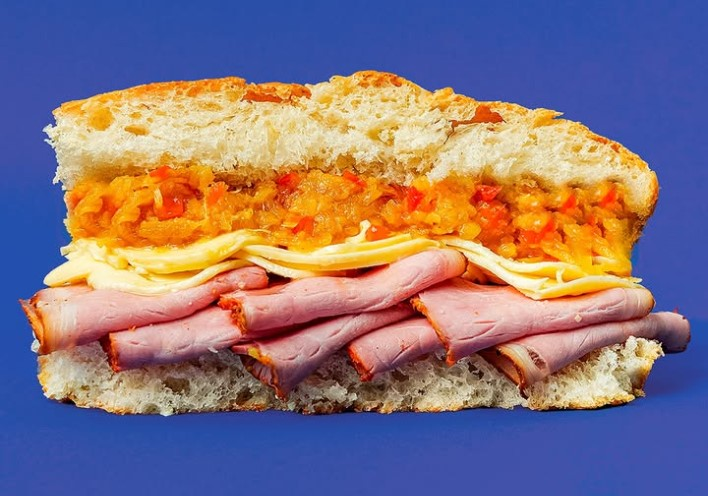
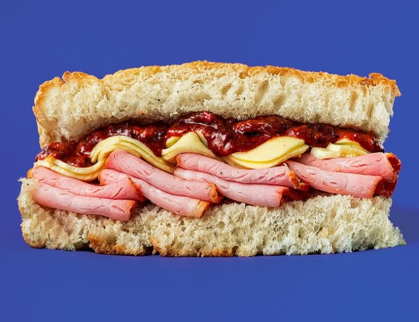

Nuestras Focaccias Estrella
Las favoritas de la casa, elaboradas con ingredientes frescos y recetas únicas.

Stracciatella
Nuestra creación más cremosa y solicitada. Un equilibrio perfecto de sabores.

Piña Picante
Para los atrevidos. Un toque dulce y vibrante que despierta todos los sentidos.

Pesto Rosso
El sabor profundo de Italia con nuestro pesto rojo de la casa.